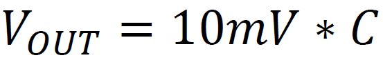

Questo integrato è un trasduttore di temperatura cioè in uscita fornisce una tensione proporzionale alla temperatura percepita. Il comportamento è regolato secondo la seguente formula:

Dove con Vo si intende la tensione in uscita e C la temperatura espressa in gradi Celsius(Centigradi). Le principali caratteristiche sono:
Possiede 3 piedini: 2 di alimentazione (Vcc e GND) e uno di output che può essere collegato direttamente ad un ADC.
void loop() {
temperatura=analogRead(0)*10*(5/1024);
Serial.print("Temperatura= ");
Serial.println(temperatura);
delay(1000);
}